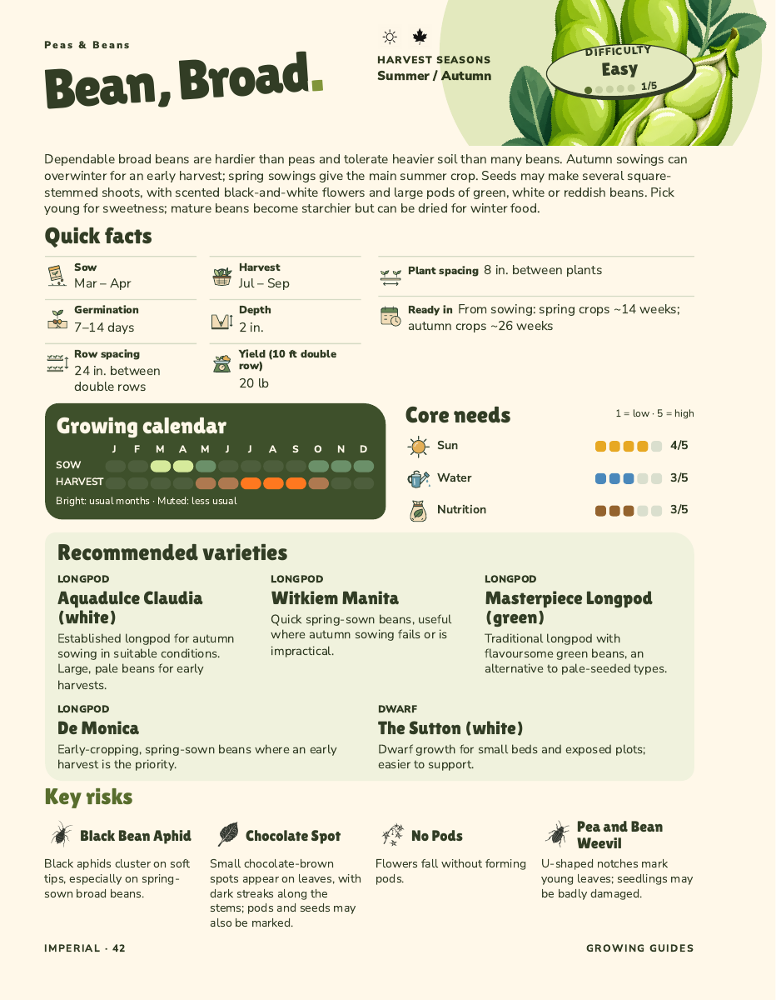
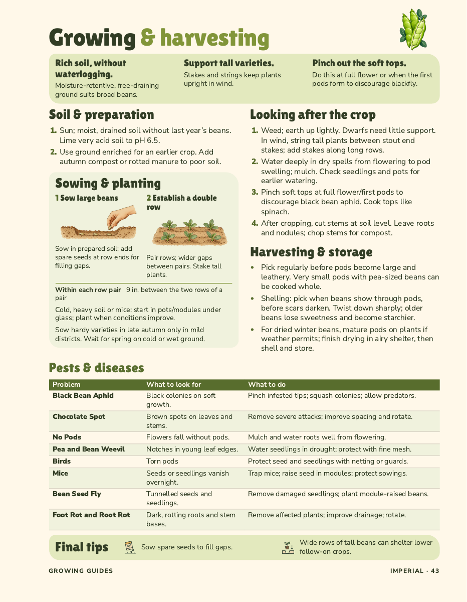

44VEGETABLE
GUIDES
GUIDES
14TROUBLE
GUIDES
GUIDES
VegSorted
The vegetable grower’s
cheat book
44 at-a-glance growing guides
& 14 troubleshooting guides
The vegetable grower’s
cheat book
44 at-a-glance growing guides
& 14 troubleshooting guides
From the first sowing to the final harvest, Veg Sorted puts the next useful step close to hand. Find the timings, spacing and growing advice you need, then get back to your patch.
Sowing calendars, variety choices, planting illustrations and practical harvest advice.
Illustrated symptoms and practical organic ways to act and prevent problems.
A peek inside →


FOR UK VEGETABLE GARDENERS
£17.50